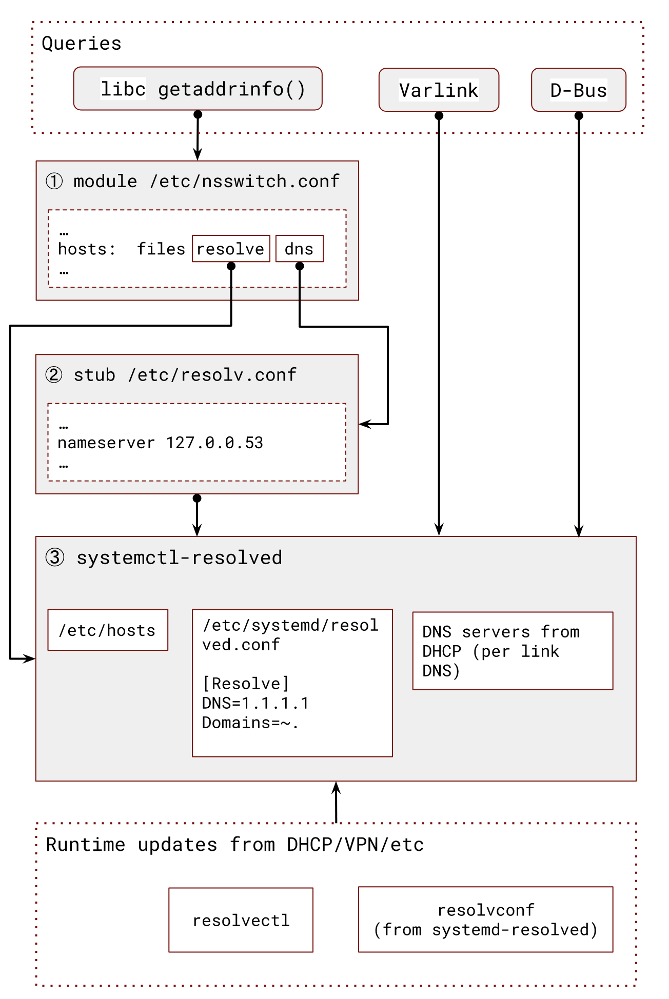

10. systemd-resolved #
Contents
- 10.1 Managing
/etc/resolv.confcontent - 10.2 Integrating
systemd-resolvedinto system - 10.3 Per link name servers and search domains
- 10.4 Useful commands
- 10.5 Querying
systemd-resolved
10.1 Managing /etc/resolv.conf content
#
The main issue with /etc/resolv.conf is managing it in modern distributions, which can have multiple sources of nameserver and search domain information due to multiple interfaces (both real and virtual, such as VPN tunnels) with concurrent DHCP clients.
The legacy method to handle this complexity was the Resolvconf project. It set up a number of hooks and updated /etc/resolv.conf appropriately by following some defined rules. However, its main issue is its lack of flexibility and inability to manage several nameservers and search domains on a per-link basis, which is sometimes needed in complex setups.
To address this, the emergence of systemd-resolved was intended to resolve (^_^) these issues.
10.2 Integrating systemd-resolved into system
#
Slowly but surely, systemd is taking on more features and responsibilities in modern GNU/Linux distributions. One of these responsibilities is serving as a local source of truth for hostname resolution with systemd-resolved.
There are several ways you can start using it system-wide or directly in your application.
systemd-resolved can integrate into the system.
For the system wide setup there are currently two ways:
- Using
nssmoduleresolve(man libnss_resolve.so.2). - Delegate the management of
/etc/resolv.conftosystemd-resolvedby symlinking/run/systemd/resolve/resolv.conf. The file sets the nameserver to127.0.0.53wheresystemd-resolvedis listening and setssearchdomains.
The second option is preferred because it also addresses issues with the search domain.
But systemd-resolved is not just a management tool for /etc/resolv.conf; it also acts as a local cache. It supports mDNS, /etc/hosts, and other name sources, and can mix them all using predefined and configurable rules, some of which we will discuss below.
10.3 Per link name servers and search domains #
By default the systemd uses a link name server if you have only one interface with DHCP:
$ resolvectl
Global
Protocols: -LLMNR -mDNS -DNSOverTLS DNSSEC=no/unsupported
resolv.conf mode: stub
Link 2 (eth0)
Current Scopes: DNS
Protocols: +DefaultRoute -LLMNR -mDNS -DNSOverTLS DNSSEC=no/unsupported
Current DNS Server: 192.168.5.3
DNS Servers: 192.168.5.3
$ resolvectl show-server-state
Server: 192.168.5.3
Type: link
Interface: eth0
Interface Index: 2
Verified feature level: UDP
Possible feature level: UDP
DNSSEC Mode: no
DNSSEC Supported: no
Maximum UDP fragment size received: 512
Failed UDP attempts: 0
Failed TCP attempts: 0
Seen truncated packet: no
Seen OPT RR getting lost: yes
Seen RRSIG RR missing: no
Seen invalid packet: no
Server dropped DO flag: no
You can change this behavior by setting a DNS recursor in the systemd-resolved config file /etc/systemd/resolved.conf.
# cat /etc/systemd/resolved.conf
[Resolve]
DNS=1.1.1.1
$ sudo systemctl restart systemd-resolved
$ sudo resolvectl
Global
Protocols: -LLMNR -mDNS -DNSOverTLS DNSSEC=no/unsupported
resolv.conf mode: stub
DNS Servers: 1.1.1.1
Link 2 (eth0)
Current Scopes: DNS
Protocols: +DefaultRoute -LLMNR -mDNS -DNSOverTLS DNSSEC=no/unsupported
DNS Servers: 192.168.5.3
As you can see now we have a global and a link DNS server.
$ resolvectl show-server-state
Server: 1.1.1.1
Type: system
Verified feature level: UDP+EDNS0
Possible feature level: UDP+EDNS0
DNSSEC Mode: no
DNSSEC Supported: no
Maximum UDP fragment size received: 512
Failed UDP attempts: 0
Failed TCP attempts: 0
Seen truncated packet: no
Seen OPT RR getting lost: no
Seen RRSIG RR missing: no
Seen invalid packet: no
Server dropped DO flag: no
Server: 192.168.5.3
Type: link
Interface: eth0
Interface Index: 2
Verified feature level: n/a
Possible feature level: UDP+EDNS0
DNSSEC Mode: no
DNSSEC Supported: no
Maximum UDP fragment size received: 512
Failed UDP attempts: 0
Failed TCP attempts: 0
Seen truncated packet: no
Seen OPT RR getting lost: no
Seen RRSIG RR missing: no
Seen invalid packet: no
Server dropped DO flag: no
$ resolvectl dns
Global: 1.1.1.1
Link 2 (eth0): 192.168.5.3
Run a DNS query:
$ resolvectl query facebook.com
facebook.com: 2a03:2880:f158:181:face:b00c:0:25de -- link: eth0
157.240.214.35 -- link: eth0
-- Information acquired via protocol DNS in 20.4ms.
-- Data is authenticated: no; Data was acquired via local or encrypted transport: no
-- Data from: network
$ resolvectl query facebook.com
facebook.com: 157.240.214.35 -- link: eth0
2a03:2880:f189:80:face:b00c:0:25de -- link: eth0
-- Information acquired via protocol DNS in 15.2ms.
-- Data is authenticated: no; Data was acquired via local or encrypted transport: no
-- Data from: cache network
In order to test a link name resolver we need to install our own DNS server. I suggest using CoreDNS, as it’s simple and powerful for our needs:
$ wget https://github.com/coredns/coredns/releases/download/v1.11.1/coredns_1.11.1_linux_arm64.tgz
$ tar -zxf coredns_1.11.1_linux_arm64.tgz
Configure it with the following config files where we create a zone test.example:
$ cat Corefile
test.example {
bind 127.0.0.153
loadbalance round_robin
file test.example.db
}
And zone file:
$ cat test.example.db
$ORIGIN test.example.
@ 3600 IN SOA sns.dns.icann.org. noc.dns.icann.org. 2017042745 7200 3600 1209600 3600
site IN A 127.0.0.1
IN A 127.0.0.2
IN A 127.0.0.3
Now check the search domains:
$ resolvectl domain
Global:
Link 2 (eth0):
Let’s set it to test.example:
$ resolvectl domain eth0 test.example
$ sudo resolvectl domain
Global:
Link 2 (eth0): test.example
The /etc/resolv.conf was updated accordingly:
$ cat /etc/resolv.conf
…
nameserver 127.0.0.53
options edns0 trust-ad
search test.example <--------------------------
Setting a name server for eth0:
$ resolvectl dns eth0 127.0.0.153
$ resolvectl
Global
Protocols: -LLMNR -mDNS -DNSOverTLS DNSSEC=no/unsupported
resolv.conf mode: stub
Current DNS Server: 1.1.1.1
DNS Servers: 1.1.1.1 127.0.0.153
Link 2 (eth0)
Current Scopes: DNS
Protocols: +DefaultRoute -LLMNR -mDNS -DNSOverTLS DNSSEC=no/unsupported
Current DNS Server: 127.0.0.153
DNS Servers: 127.0.0.153
DNS Domain: test.example
The /etc/resolv.conf still has stub only, as expected:
$ cat /etc/resolv.conf
nameserver 127.0.0.53
options edns0 trust-ad
search test.example
Let’s make some queries:
$ resolvectl query site.test.example
site.test.example: 127.0.0.2
127.0.0.1
127.0.0.3
-- Information acquired via protocol DNS in 3.2ms.
-- Data is authenticated: no; Data was acquired via local or encrypted transport: no
-- Data from: network
$ resolvectl query facebook.com
facebook.com: 2a03:2880:f158:181:face:b00c:0:25de -- link: eth0
163.70.147.35 -- link: eth0
-- Information acquired via protocol DNS in 16.8ms.
-- Data is authenticated: no; Data was acquired via local or encrypted transport: no
-- Data from: network
Query with search domain for site hostname:
$ resolvectl query site
site: 127.0.0.1
127.0.0.3
127.0.0.2
(site.test.example)
-- Information acquired via protocol DNS in 3.4ms.
-- Data is authenticated: no; Data was acquired via local or encrypted transport: no
-- Data from: network
For non-existing site2:
$ resolvectl query site2
site3: Name 'site2' not found
In tcpdump we can see that the request was sent with search domain:
$ sudo tcpdump -i any -s0 -A -n port 53
17:49:24.467909 lo In IP 127.0.0.1.36205 > 127.0.0.153.53: 17745+ [1au] A? site2.test.example. (47)
17:49:24.468073 lo In IP 127.0.0.1.46166 > 127.0.0.153.53: 40292+ [1au] AAAA? site2.test.example. (47)
But if we ask for a hostname fb.com, we will see an interesting under the hood:
$ dig +short @127.0.0.53 fb.com
157.240.214.35
$ sudo tcpdump -i any -s0 -A -n port 53
19:08:01.937480 eth0 Out IP 192.168.5.15.51825 > 1.1.1.1.53: 20123+ [1au] A? fb.com. (35)
19:08:01.937501 eth0 Out IP 192.168.5.15.45070 > 1.1.1.1.53: 23151+ [1au] AAAA? fb.com. (35)
19:08:01.937522 lo In IP 127.0.0.1.35601 > 127.0.0.153.53: 13671+ [1au] A? fb.com. (35)
19:08:01.937672 lo In IP 127.0.0.1.48931 > 127.0.0.153.53: 11867+ [1au] AAAA? fb.com. (35)
19:08:01.937888 lo In IP 127.0.0.153.53 > 127.0.0.1.35601: 13671 Refused- 0/0/1 (35)
19:08:01.937909 lo In IP 127.0.0.153.53 > 127.0.0.1.48931: 11867 Refused- 0/0/1 (35)
19:08:01.950784 eth0 In IP 1.1.1.1.53 > 192.168.5.15.51825: 20123 1/0/1 A 157.240.214.35 (51)
19:08:01.952483 eth0 In IP 1.1.1.1.53 > 192.168.5.15.45070: 23151 1/0/1 AAAA 2a03:2880:f158:181:face:b00c:0:25de (63)
The query returns a correct answer, but in the tcpdump we can see that all name servers were asked to provide responses, including our link nameserve 127.0.0.153. This default behavior could lead to a very nasty DNS leak security flaw usually with VPN software:
A DNS leak is a security flaw that allows DNS requests to be revealed to ISP DNS servers, despite the use of a VPN service to attempt to conceal them.[1] Although primarily of concern to VPN users, it is also possible to prevent it for proxy and direct internet users.
In order to address this issues we should leverage the Domains directive:
[Resolve]
DNS=1.1.1.1
Domains=~.
Domains=A whitespace-separated list of domains which should be resolved using the DNS servers on this link. Each item in the list should be a domain name, optionally prefixed with a tilde ("
~"). The domains with the prefix are called “routing-only domains”. The domains without the prefix are called “search domains” and are first used as search suffixes for extending single-label hostnames (hostnames containing no dots) to become fully qualified domain names (FQDNs). If a single-label hostname is resolved on this interface, each of the specified search domains are appended to it in turn, converting it into a fully qualified domain name, until one of them may be successfully resolved.Both “search” and “routing-only” domains are used for routing of DNS queries: look-ups for hostnames ending in those domains (hence also single label names, if any “search domains” are listed), are routed to the DNS servers configured for this interface. The domain routing logic is particularly useful on multi-homed hosts with DNS servers serving particular private DNS zones on each interface.
The “routing-only” domain “
~.” (the tilde indicating definition of a routing domain, the dot referring to the DNS root domain which is the implied suffix of all valid DNS names) has special effect. It causes all DNS traffic which does not match another configured domain routing entry to be routed to DNS servers specified for this interface. This setting is useful to prefer a certain set of DNS servers if a link on which they are connected is available.
Get the new config:
$ resolvectl
Global
Protocols: -LLMNR -mDNS -DNSOverTLS DNSSEC=no/unsupported
resolv.conf mode: stub
DNS Servers: 1.1.1.1 127.0.0.153
DNS Domain: ~.
Link 2 (eth0)
Current Scopes: DNS
Protocols: +DefaultRoute -LLMNR -mDNS -DNSOverTLS DNSSEC=no/unsupported
DNS Servers: 127.0.0.153
DNS Domain: test.example
And now if we re-run our query:
$ resolvectl query fb.com
fb.com: 2a03:2880:f189:80:face:b00c:0:25de -- link: eth0
163.70.147.35 -- link: eth0
-- Information acquired via protocol DNS in 17.7ms.
-- Data is authenticated: no; Data was acquired via local or encrypted transport: no
-- Data from: network
And in the tcpdump output we can see only requests to the global resolver:
$ sudo tcpdump -i any -s0 -A -n port 53
19:10:38.312632 eth0 Out IP 192.168.5.15.41775 > 1.1.1.1.53: 37889+ [1au] AAAA? fb.com. (35)
19:10:38.312656 eth0 Out IP 192.168.5.15.50771 > 1.1.1.1.53: 14510+ [1au] A? fb.com. (35)
19:10:38.327208 eth0 In IP 1.1.1.1.53 > 192.168.5.15.41775: 37889 1/0/1 AAAA 2a03:2880:f189:80:face:b00c:0:25de (63)
E..[
19:10:38.329088 eth0 In IP 1.1.1.1.53 > 192.168.5.15.50771: 14510 1/0/1 A 163.70.147.35 (51)
And local domains still work:
$ resolvectl query site
site: 127.0.0.2
127.0.0.1
127.0.0.3
(site.test.example)
-- Information acquired via protocol DNS in 1.7ms.
-- Data is authenticated: no; Data was acquired via local or encrypted transport: no
-- Data from: network
and only ask local name server with the correct search domain:
19:11:51.498355 lo In IP 127.0.0.1.43769 > 127.0.0.153.53: 57337+ [1au] AAAA? site.test.example. (46)
19:11:51.498462 lo In IP 127.0.0.1.55548 > 127.0.0.153.53: 44925+ [1au] A? site.test.example. (46)
19:11:51.499115 lo In IP 127.0.0.153.53 > 127.0.0.1.55548: 44925*- 3/0/1 A 127.0.0.2, A 127.0.0.1, A 127.0.0.3 (145)
19:11:51.499149 lo In IP 127.0.0.153.53 > 127.0.0.1.43769: 57337*- 0/1/1 (128)
10.4 Useful commands #
A handy monitor sub command allows us to monitor the ongoing queries:
$ sudo resolvectl monitor
→ Q: cf.com IN AAAA
← S: success
← A: cf.com IN SOA merlin.ns.cloudflare.com dns.cloudflare.com 2343786646 10000 2400 604800 1800
→ Q: google.com IN AAAA
← S: success
← A: google.com IN AAAA 2a00:1450:4009:823::200e
As was mentioned above systemd-resolved provides a local cache:
$ sudo resolvectl show-cache
Scope protocol=dns ifindex=2 ifname=eth0
No entries.
Scope protocol=dns
google.com IN AAAA 2a00:1450:4009:823::200e
google.com IN MX 10 smtp.google.com
10.5 Querying systemd-resolved
#
Using standard resolver methods like getaddrinfo() or connecting to /etc/resolv.conf nameservers over the DNS protocol will not provide the full power of per-link resolvers and search domains. Therefore, if your application truly needs this information, you can use two alternative interfaces provided by systemd-resolved:
10.5.1 Varlink
#
Install dependencies:
$ sudo apt install python3-varlink meson make
$ python3 -m varlink.cli info unix:/run/systemd/resolve/io.systemd.Resolve
Vendor: The systemd Project
Product: systemd (systemd-resolved)
Version: 255 (255.4-1ubuntu8.1)
URL: https://systemd.io/
Interfaces:
io.systemd
io.systemd.Resolve
org.varlink.service
Build cli tool:
$ git co https://github.com/varlink/libvarlink
$ cd libvarlink
$ make build
Run:
$ build/tool$ ./varlink help unix:/run/systemd/resolve/io.systemd.Resolve/io.systemd.Resolve
$ ./varlink call unix:/run/systemd/resolve/io.systemd.Resolve/io.systemd.Resolve.ResolveHostname '{ "name": "site"}'
{
"addresses": [
{
"address": [
127,
0,
0,
1
],
"family": 2
},
{
"address": [
127,
0,
0,
2
],
"family": 2
},
{
"address": [
127,
0,
0,
3
],
"family": 2
}
],
"flags": 8388609,
"name": "site.test.example"
}
The additional features can be called by specifying the interface by setting ifindex.
10.5.2 D-Bus
#
Another way to interact with an extended systemd-resolved interface is via D-Bus.
$ busctl status org.freedesktop.resolve1
PID=3478
PPID=1
TTY=n/a
UID=991
EUID=991
SUID=991
FSUID=991
GID=991
EGID=991
SGID=991
FSGID=991
SupplementaryGIDs=991
Comm=systemd-resolve
CommandLine=/usr/lib/systemd/systemd-resolved
Label=unconfined
CGroup=/system.slice/systemd-resolved.service
Unit=systemd-resolved.service
Slice=system.slice
UserUnit=n/a
UserSlice=n/a
Session=n/a
AuditLoginUID=n/a
AuditSessionID=n/a
UniqueName=:1.42
EffectiveCapabilities=cap_net_raw
PermittedCapabilities=cap_net_raw
Documentation for the API format could be found here: https://www.freedesktop.org/software/systemd/man/latest/org.freedesktop.resolve1.html.
Run to resolve site hostname:
$ busctl call org.freedesktop.resolve1 /org/freedesktop/resolve1 org.freedesktop.resolve1.Manager ResolveHostname isit 0 site 0 0
result:
a(iiay)st 3 0 2 4 127 0 0 3 0 2 4 127 0 0 1 0 2 4 127 0 0 2 "site.test.example" 8388609
Run to resolve fb.com hostname:
$ busctl call org.freedesktop.resolve1 /org/freedesktop/resolve1 org.freedesktop.resolve1.Manager ResolveHostname isit 0 fb.com 0 0
Result:
a(iiay)st 2 2 2 4 157 240 221 35 2 10 16 42 3 40 128 241 88 0 130 250 206 176 12 0 0 37 222 "fb.com" 8388609